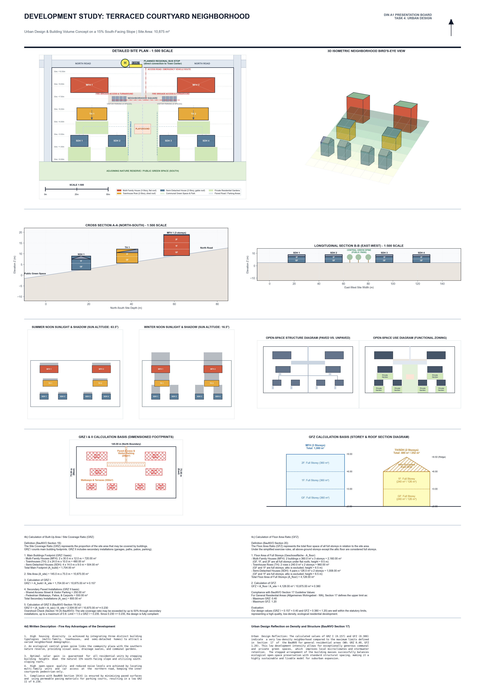
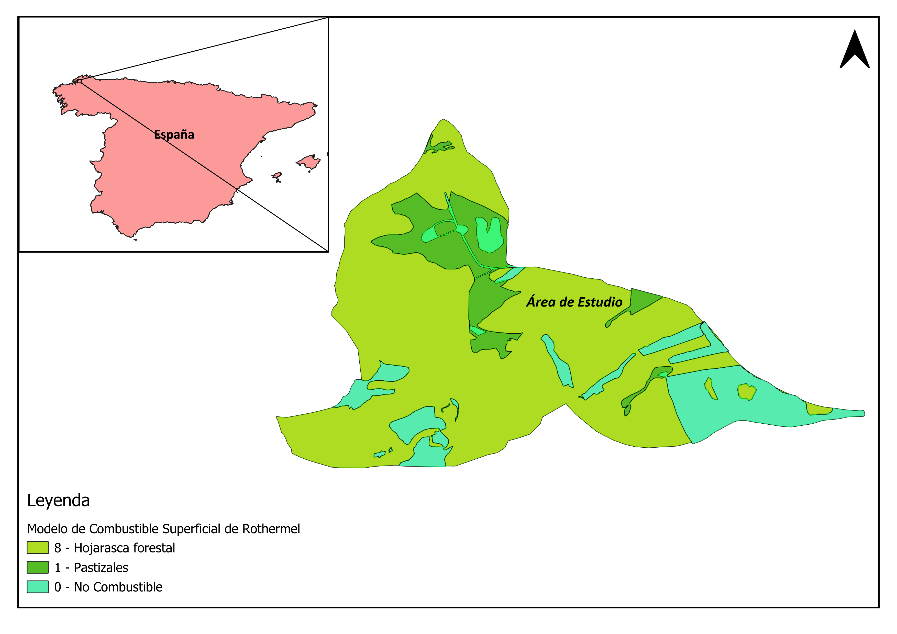

Defensible Orbital Analytics from Raw Radiance to Calibrated Physical Metrics
Modern environmental monitoring and infrastructure planning require quantitative accuracy that simple visual composites cannot provide. GeoPhoenix conducts rigorous radiometric calibration, atmospheric correction (Surface Reflectance using Sen2Cor, LaSRC, or LEDAPS), and cloud masking using QA band algorithms.
We specialize in deriving biophysical and thermodynamic parameters: calculating Land Surface Temperature (LST) using single-channel and split-window algorithms from thermal infrared sensors (TIRS), extracting normalized spectral indices (NDVI, NDBI, NDWI, MNDWI, SAVI, EVI), and performing supervised machine-learning classifications (Random Forest, Support Vector Machines) backed by quantitative confusion matrix accuracy assessments (Kappa coefficient, Producer's and User's accuracy).
Earth Observation Toolset
- Google Earth Engine (GEE) JavaScript & Python API execution
- ESA Copernicus Sentinel-2 MSI (10m/20m) & Sentinel-1 SAR
- USGS/NASA Landsat 5/7/8/9 30m multispectral and 100m thermal
- MODIS TERRA/AQUA time-series anomaly monitoring
- Python raster pipelines via Rasterio, Xarray, and GDAL
Remote Sensing Specializations
From thermal urban microclimates to decadal forest canopy monitoring.
Land Surface Temperature (LST)
Quantitative thermal infrared inversion (Landsat 8/9 Band 10, MODIS) modeling Urban Heat Island (UHI) effects, thermal anomalies, and microclimate disparities.
Vegetation Dynamics (NDVI/EVI/SAVI)
Crop vigor tracking, drought impact monitoring, forest health evaluation, and biomass phenology analysis utilizing multi-spectral reflectance profiles.
Built-Up & Soil Indices (NDBI/EBBI)
Accurate differentiation between impervious surfaces, bare soils, and sparse vegetation to assess urban sprawl and surface impermeability.
Surface Water & Moisture (NDWI/MNDWI)
Waterbody delineation, wetland inundation tracking, shoreline recession monitoring, and soil moisture proxy evaluation using Green and SWIR bands.
Multi-Temporal Change Detection
Post-classification comparison, image differencing, and time-series trajectory modeling revealing decadal land-use shifts, deforestation, and coastal accretion.
LULC Supervised Classification
Machine-learning pixel-based and object-based image analysis (OBIA) paired with confusion matrix validation, stratified random ground-truth points, and Kappa scoring.
The Remote Sensing Pipeline
A reproducible, scientifically sound methodology ensuring defensible research and consulting deliverables.
Scene Acquisition & Cloud Masking
Selection of cloud-free (< 10% cloud cover) target scenes matching seasonal phenology. Masking shadows and cirrus using pixel quality assessment (QA) bitmasks.
Radiometric & Atmospheric Correction
Conversion from Top of Atmosphere (TOA) Digital Numbers (DN) to Surface Reflectance (BOA) and Top-of-Atmosphere brightness temperature in Kelvin/Celsius.
Spectral Math & Feature Extraction
Computation of normalized difference indices, fractional vegetation cover (FVC), surface emissivity, and training sample collection for classifier modeling.
Accuracy Verification & Export
Independent validation against high-resolution reference data, error matrix computation, and output generation as georeferenced 32-bit floating point GeoTIFFs.
Remote Sensing Project Demonstrations
Real-world applications of optical satellite analytics and thermal modelling.

Urban Solar Potential & Canopy Dynamics
Multi-band spectral analysis correlating urban rooftop solar radiation with urban tree canopy density (NDVI), providing municipal planners with microclimate mitigation and renewable energy priority zones.

Forest Fire Fuel Model & Moisture Mapping
Satellite classification of vegetation fuel loads, combining Normalized Difference Moisture Index (NDMI) with topographic slope models to pinpoint high-combustion risk forest parcels.
Remote Sensing Deliverable Standards
Every remote sensing study includes fully processed rasters, documentation, and metadata:
Frequently Asked Questions
Everything you need to know about commissioning satellite analytics.
We convert the Thermal Infrared Sensor (TIRS) Digital Numbers to Top-of-Atmosphere (TOA) spectral radiance. We then derive brightness temperature, compute the Fractional Vegetation Cover (FVC) from NDVI, estimate surface emissivity using the NDVI threshold method, and invert Planck's equation to calculate exact surface temperature in degrees Celsius or Kelvin.
For open-access missions, we process Sentinel-2 MSI at 10-meter resolution (visible and NIR bands) and Landsat 8/9 at 30-meter resolution (pan-sharpened to 15 meters). If your project requires sub-meter commercial imagery (WorldView, PlanetScope, Pleiades), we can ingest your pre-purchased scenes or advise on provider tasking.
We generate a stratified random sample of ground verification points across all classification categories, validating them against high-resolution aerial imagery or ground-truth reference sets. We provide a full Confusion Matrix reporting Overall Accuracy, User's Accuracy (Commission errors), Producer's Accuracy (Omission errors), and Cohen's Kappa Coefficient.
Yes. We develop clean, commented, and reproducible GEE JavaScript and Python API scripts that allow clients to automate image collection filtering, cloud masking, index computation, and time-series charting across their regions of interest.